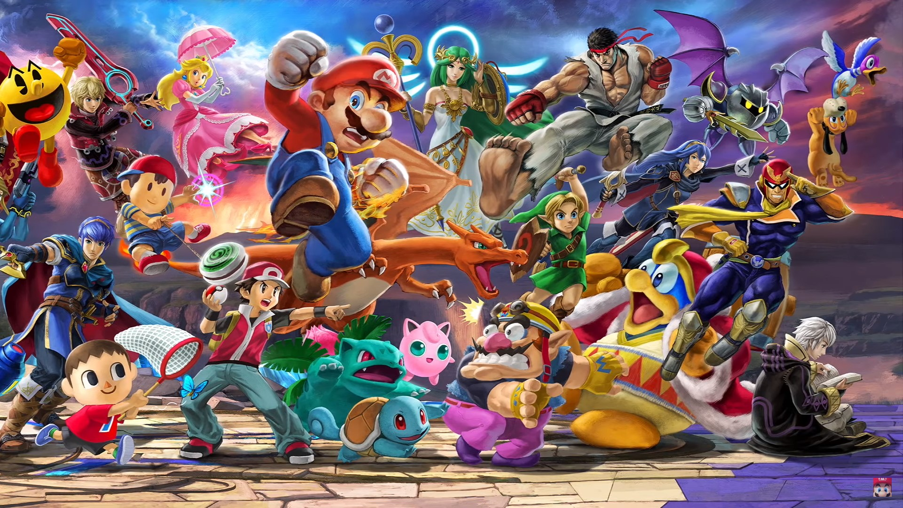

Smash News
Catch up on the latest Smash Bros. Ultimate news here. Any new updates and/or character leaks will be post.
New CHARACTER LEAK-optained through Secret assets!!
More Smash Bros. character leaks are still surfacing. This one comes from a strange image on Reddit. At first, the picture doesn't seem to make sense. However, one person that goes by the name of Levy22 found a pattern in the image that represented binary code. By deciphering the picture, he found a list of characters that he believes are newcomers for Super Smash Bros. Ultimate. Since people are discussing this, I decided to inform you, but it really doesn't make much sense and is way to easy for anyone to create, so take it with a grain of salt.
Bayonetta was NOT the winner of the Smash Bros. Fighter Ballot!?
As much as Sakurai would like you to think otherwise, Bayonetta might not have been the winner of the Smash Bros. Fighter Ballot as we were lead to believe. Some information has surfaced, showing that Bayonetta was being worked on for Smash before the ballot was announced. This means the whole thing was, at best, a way to gauge the popularity of characters and a total lie at worst. Though they might use the results to select characters this time around, Right now, it looks like the Smash Bros. Fighter Ballot was meaningless if the information turns out to be true.